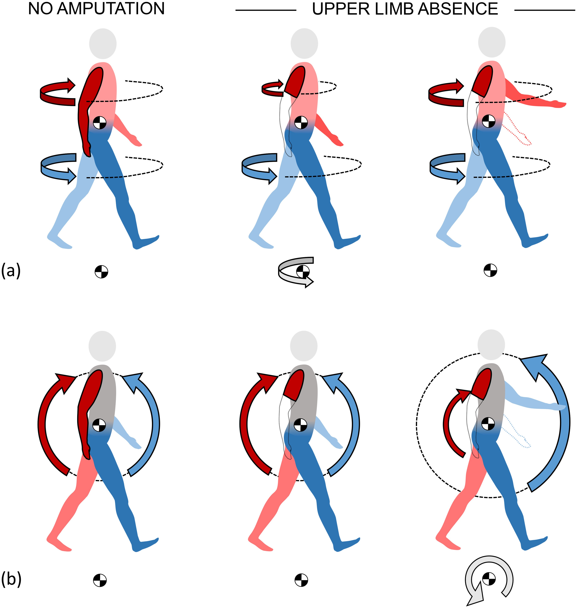
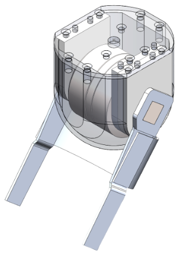
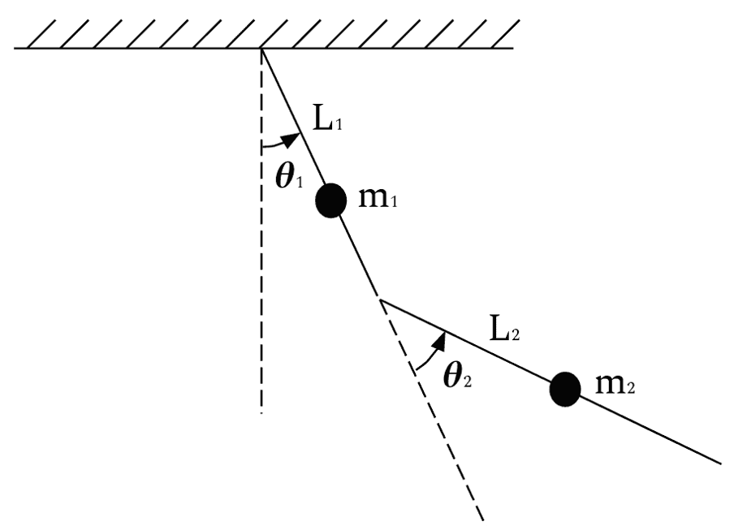
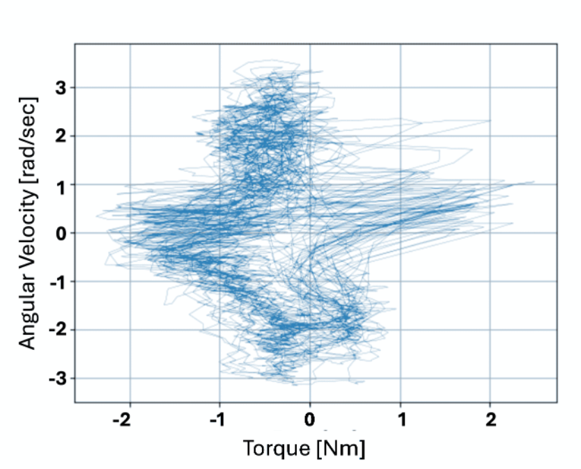

This project began as an undergraduate research effort and has since grown into the focus of my Master’s thesis in Mechanical Engineering.
Over the past year, I published my first conference paper on this topic in ICORR for the Rehabweek 2025 conference and presented my work at Northwestern's Mechanical Engineering Research Symposium, where I was awarded Best Undergraduate Poster.
This portfolio page serves as an ongoing update to the project as I continue to develop and refine the motorized prosthetic arm over the next year.
Project Motivation & Background
For individuals with upper-limb loss, the absence of natural arm swing during walking impacts balance and stability. Traditional prosthetic arms are motor-less, and therefore do not restore the natural dynamics of gait.
This project aims to build a motorized prosthesis that actively mimics natural arm swing, restoring biomechanical symmetry and improving overall walking stability.

Arm swing during ambulation helps dissipate angular momentum, this dissipation is interrupted after limb loss. It may be restored with over exertion on the unaffected side, however, this introduces imbalance in a different axis [1]
System Overview
New mechanical design prioritized joint alignment to reduce friction, fully encases BLDC motor and will have an add on to house the PCB.
Embedded system uses asimpleFOC controller to drive a brushless DC (BLDC) motor.

Left: Mechanical design currently being manufactured [2], Right: SimpleFOC control in action on prototype
Control Approach
We plan on testing position control vs torque control to see which produces more natural arm swing
Trajectory generation: the controller will follow either backward-calculated torque trajectories or collected position trajectories.
Biomarker-based synchronization: we hope to collect heelstrike data during use to correlate to a known point in arm swing progression to line up prosthetic arm swing with that of the user


Recall from previous research where we have back calculated the elbow torque using a double pendulum model [3]
Key Takeaways & Next Steps
Importance of anticipating external human dynamics when designing controllers.
Motor selection and gearing critical for responsiveness in real-world use.
Filtering and hybrid control strategies required for robustness.
Next steps (Master’s thesis): redesign motor actuation, explore hybrid position-torque control, expand participant testing.